Rasa Club
×

مسابقة
عشرة أسئلة عن ثورة التحرير الجزائرية، تكريماً للشهداء واختباراً لذاكرتنا الجماعية.
- quiz10 أسئلة
- timer30 ثانية لكل سؤال
- groupsاختاروا الإجابة معاً
30
0/10
إجابات صحيحة
المجد والخلود لشهدائنا الأبرار